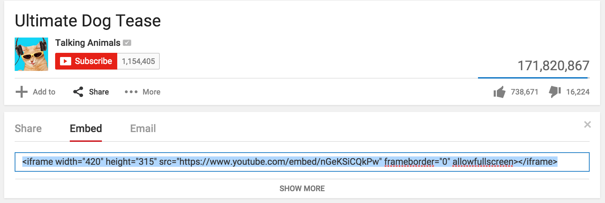

Glückwunsch! Du hast alle Grundlagen für HTML und CSS gelernt. Das war jetzt evt. sehr, sehr viel für einen Tag. Und du hast sicher auch gemerkt, dass unsere Webseite immer noch nicht aussieht, wie die Demo.
Auf keinen Fall verzweifeln! Webdesign ist extrem schwierig und erfordert vorallem viel Erfahrung! Um weiter zu üben und mehr zu lernen ist es immer sehr hilfreich, bei anderen Webseiten abzuschauen und von ihnen zu lernen.
Wir lernen jetzt noch einige nützliche Tools, um das Webdesign nach und nach anzupassen.
Viele Seiten bieten dir oftmals sogenannte Embed-Möglichkeiten an um gewissen Sachen auf deiner eigenen Webseite anzuzeigen. Auf YouTube kann man zum Beispiel jedes Video einfügen:

Füge dein Lieblings-YouTube Video ein.
HTML ist eine Markup Language. Neben HTML gibt es weitere, andere Markup Languages. Du erkennst diese, dass sie immer Bereiche mit Tags und spitzen Klammern verwenden. Eigentlich muss man daher immer am Anfang der Datei sagen, um was für eine Markup Language es sich handelt. Richtig wäre daher:
<!DOCTYPE html>
<html>
<head>
</head>
<body>
</body>
</html>Wie du aber bereits gesehen hast, funktioniert es auch ohne. Aber für einen sauberen Programmierstil, willst du es vielleicht drin haben.
Füge die DOCTYPE Anweisung in deine Webseite ein.
(Fast) alle Webbrowser bieten dir Möglichkeiten an, den HTML-Code von Webseiten zu sehen. Dies ist zum Beispiel praktisch, wenn du etwas von anderen Webseiten toll findest und es nachbauen möchtest. Es hilft aber auch, um an der eigenen Webseite zu basteln und schneller Änderungen zu sehen.
Twitter hat zum Beispiel abgerundete Ecken um Textboxen. Finde heraus wie man das mit CSS umsetzt.
Manchmal möchte man im Code gewisse Dinge erklären, oder den Code strukturieren, damit man in besser versteht. Allerdings kann man nicht einfach Text reinschreiben, weil dieser dann auf der Webseite zu sehen wäre.
Dafür gibt es Kommentare. Du kannst überall in deinem Code Kommentare schreiben und diese werden nicht im Browser angezeit! Kommentare schreibst du so:
<!-- Dies ist ein Kommentar -->Kommentiere deinen Code.